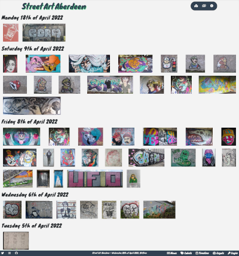

News


We've been exploring this year's Nuart pieces, that have been appearing across the city. IN addition to the main program, there is a spead of other new pieces across the city.
Some useful links on the site...
- Nuart 2023 pieces.
- All Nuart pieces.
- The timeline screen, see what's recently been added.
More on Nuart
We always look forward to Nuart Aberdeen and 2023 is no different, so we were interested to see the artists announced today.
We're delighted to announce we've now release the first version of our API.
For full details, see our API and OpenData page.
Having chatted to Mairi Rodgers during the making of the documentary last year, it's great to see it released.
The blurb...
Journalist Mairi Rodgers is in Aberdeen for the Nuart Festival, an annual celebration of street art. A self confessed newbie to the scene, she signs up as a volunteer to discover what it’s all about. Aberdeen has established its global reputation, with over 40 huge murals and hundreds of smaller works dotted around the city centre. Mairi soon finds herself assisting some of Europe’s most talented muralists, including Slim Safont, Jacoba Niepoort and Glasgow-based James Klinge.
Mairi meets legendary photographer Martha Cooper, known for documenting the New York graffiti scene in the 1980s. Martha is impressed by the quality of the artwork on offer. But can graffiti really be described as art? And is it legal? Mairi joins Aberdeen artist Jon Reid on a tour of the city’s back streets, where he encourages her to pick up a spray can and make her own mark on this painted city.
You can witch it on BBC iPlayer now at https://www.bbc.co.uk/iplayer/episode/m001gzyv/tog-do-shuil-painted-city
We're please to announce a new feature, tagging places by location. This means you can see all the artworks in a specific location in one go, Initially we're using this to highlight art hot spots across the city.
The locations we've got so far are...
- Sunnybank
- Mounthooly
- Old farm, Bridge of Don
- Denburn
- The Green
- Carnegie's Brae
- Greyhope Bay
- Clifton road shops
- Fittie
- Westburn park
- Garthdee
- Beach tunnel north
- Former Hydrasun
- Transition Extreme
A few of us from the Aberdeen's Street Art community have got together to start repairing the Graffiti wall at Transition Extreme. It was originally created 12 or 14 years ago, but was partially destroyed a few years ago.
The wall will be around 40m long and 2m high, so it's a great space for loads of Art.
We put a few boards back up a few weeks ago, but on Saturday we started weatherproofing the wall structure, next we'll put some new boards back on and get it ready for Graffiti. It'll be a great addition to the Street Art scene in Aberdeen, and an awesome place for legal art.
Huge thanks to those who got this all started and brought people together for this. Thanks also to Transition Extreme for ongoing support.
At the end of the Nuart 2022 weekend, we're reflecting on a great set of events, and a fantastic visual legacy for the city. We've just about added all of the pieced to our Nuart 2022 page though I don't think we'll ever find all of the Miss.Printed pieces.
We're delighted to say, we've reached a milestone, with over 1000 pieces of Street Art now documented on the catalogue.
Stats on 2nd of June 2022...
- Number of artworks: 1011
- Added in June 2022: 7
- Added in May 2022: 182
- Added in April 2022: 188
- Added in March 2022: 232
- Added in February 2022: 182
- Added in January 2022: 220
We'll keep adding to the catalogue, finding old pieces, and spotting new ones, the journey continues.
While details about Nuart Aberdeen 2022 have been gradually released over the last month, we now have pretty much all the info on what, who, and where.
The artists are; Martin Whatson, James Klinge, Pejac, Nuno Viegas, Jofre Oliveras, Mohamed L’Ghacham, Slim Safont, Erin Holly, Elisa Capdevila, JACOBA and Miss.Printed
The locations are; Holburn House on Union Street, Unite Students on Spring Gardens, Ibis Hotel, Pure Gym, Queen Street, Brodies on Union Grove, 48 Huntly Street, 1 Union Wynd and Frederick Street Car Park
Aberdeen's own, ever awesome, Jon Reid will be running walking tours of the locations and providing background deeper insight into each piece
More info:
We're looking forward to Nuart 2022, coming up soon, from the 9th to 12th of June. It sounds like a great line up of artists, speakers and tours.
More info:
We've added a new feature, the Timeline screen, just from the link in the bottom right. This shows Street Art in the order that it was added to the system. This can be useful for seeing what's new.

We added a new feature to the site this week, on the page for each artwork, there is now, at the bottom, a map of the 20 closest artworks. This should help people explore round the city from one piece to the next.
Like this...
Sunnybank is a great spot to go have a look at some top street art, it's ever changing, and the big wall offers a great canvas for many artworks.
We've a label and page for Sunnybank, have a look.
Sunnybank park is a designated Graffiti spot, so it's listed on Wallspot.
Aberdeen market was built in 1974, but has, over the last few years, become better know as a location for Street Art. The green, which the market is adjacent to, has become a hub for Street Art, in part due to the fine work of Nuart and Painted Doors.
We've created a label for Former Aberdeen Market so we can record what has been lost during the demolition. As the work progresses we'll get a better idea of what has gone, and what remains.
Some photos taken on the 15th of March 2022, just as the demolition started.
It's not about numbers, but we're chuffed to now have 500 items in the Street Art Gallery / Catalogue.
We started taking photos round about the 14th of January, so that's 58 days, making for an average of around 9 per day!
We're still really keen to get more feedback from the Street Art community, so please get in touch and let us know of any issues, ideas or suggestions you have.
So it's been nearly 2 weeks since we launched this project into the wild, and it's going ok, though there is lots more to do. We're constantly adding artworks and new features.
We'd love some more feedback, what do you think so far?
Also, if you know where some street art is that we've missed, let us know. Or, if you know more about some of the artworks listed, that'd be great.
After a bit of testing, some feedback and tweaks, Street Art Aberdeen is ready to go, we think.
It's just a soft launch though, so, sssh, don't tell anyone.
Please let us know if you'd like to get involved, if you have any feedback, ideas or thoughts.
We've been thinking about this project for a while, but it's good to start new things in a new year, so let's go!